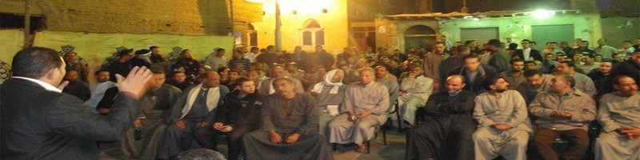
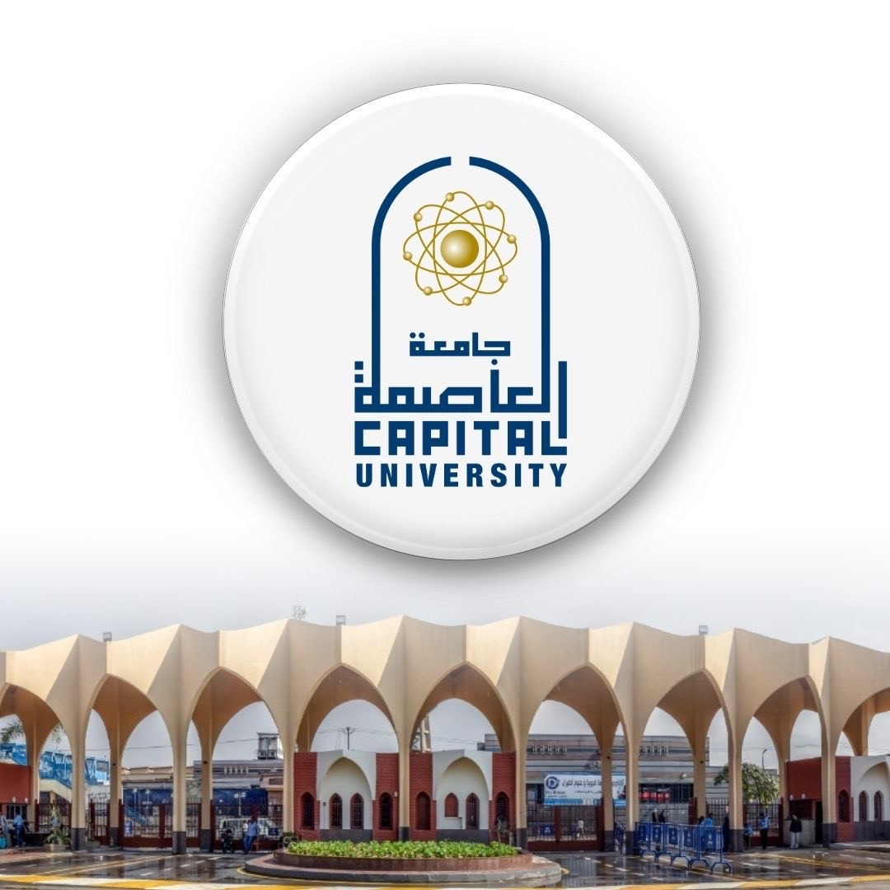
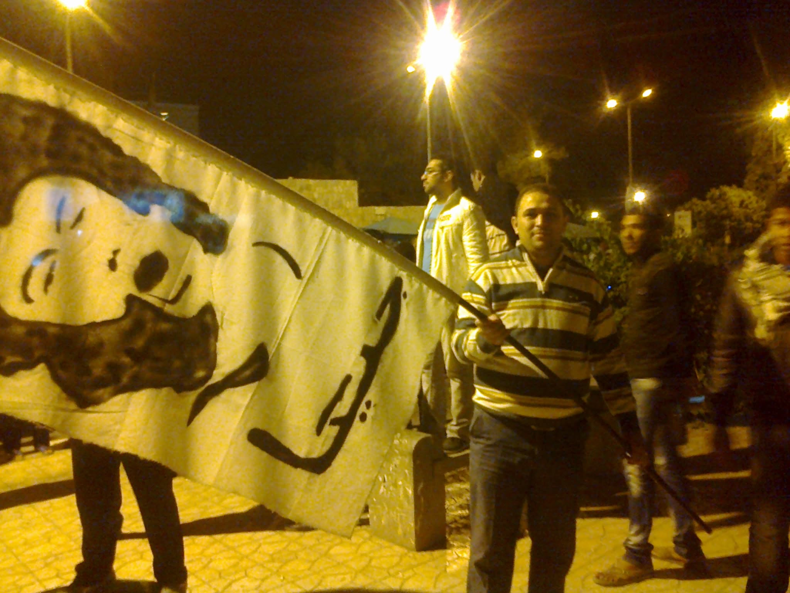
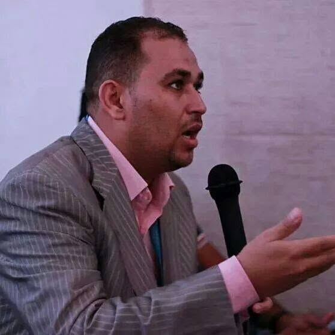

My family’s story stretches across four generations and
several regions of Egypt. My great-grandfather came from
a Bedouin background connected to the Al-Tumeilat tribe
in North Sinai. In the early twentieth century, he moved
to Menoufia and began a settled life as a government
employee.
Later generations of my family experienced rural life,
agricultural work, industrial employment, and migration
from Menoufia to the working-class neighborhoods of
Helwan in southern Cairo. Each generation faced different
economic and social challenges, but the family continued
to adapt through work, cooperation, and perseverance.
I grew up in Helwan in a family that understood the value
of education even when resources were limited. My family’s
experience taught me that history is not only the story of
governments and political leaders. It is also the story
of ordinary families working to build stable lives while
responding to economic, social, and political change.
This family history shaped my interest in law, history,
social justice, public institutions, and the relationship
between government policies and the everyday experiences
of working families.
An Early Lesson in Leadership

One of my earliest lessons in leadership came during
my school years in Helwan. My classroom lacked basic
materials, including reliable lighting, usable desks,
window coverings, chalk, and a functioning blackboard.
After I was elected class leader, I organized my
classmates to contribute small amounts of money to
improve the classroom. My father helped repair the
damaged desks, and together we obtained the materials
needed to improve the room.
Our classroom became one of the best rooms in the
school, and our teachers recognized what we had
accomplished. That experience taught me that leadership
begins with recognizing a shared problem, bringing
people together, and taking practical action.
The same lesson later influenced my professional work
in civic education, organizational leadership, and
community engagement.
My Educational Journey
My education connects three institutions and two legal and
academic systems. Each stage has contributed to my goal of
combining legal knowledge, historical research, and public
service.
George Mason University
Fall 2024–Present
I am a senior undergraduate student pursuing a
Bachelor of Arts in History in the College of
Humanities and Social Sciences. My expected
graduation is Spring 2027.
My studies focus on history, law, constitutional
development, democratic institutions, public policy,
and the relationship between government and society.
This degree is preparing me for law school and a
future legal career in the United States.
Germanna Community College
Graduated Spring 2025
I earned an Associate of Arts and Sciences in
General Studies and graduated Summa Cum Laude.
My education at Germanna strengthened my academic
writing, research, critical thinking, mathematics,
science, and humanities skills. It also provided
the academic foundation for my transfer to
George Mason University.
My academic recognition included membership in
Phi Theta Kappa, six appearances on the President’s
List, and three appearances on the Dean’s List.

Helwan University
Graduated 2006
I earned a Bachelor of Laws from the Faculty of
Law at Helwan University.
My legal education provided a foundation in legal
reasoning, public law, civil law, constitutional
studies, legal research, and the relationship
between law, government, and society.
This legal foundation continues to shape my studies
at George Mason University and my long-term goal
of attending law school in the United States.
The January 25 Revolution
The January 25 Revolution was an important moment in my
personal and professional development. Like many Egyptians
of my generation, I saw the revolution as an opportunity
to promote greater public participation, accountability,
justice, and respect for citizens’ rights.

Participation in a public activity during the period
of the January 25 Revolution.

Speaking during a public discussion about civic
participation and community issues.
During the period following the revolution, I participated
in grassroots organizing, community meetings, public
discussions, and civic education activities. These meetings
created opportunities for residents to learn about elections,
discuss public issues, and participate in a rapidly changing
political environment.
My role focused on public education and community dialogue.
I helped explain electoral systems and encouraged citizens
to understand their rights, responsibilities, and available
forms of public participation.
Although the political environment changed significantly,
the experience strengthened my belief that meaningful
democratic participation requires education, accessible
information, strong institutions, and opportunities for
ordinary people to be heard.
Professional Background and Future Direction
From 2009 to 2015, I served as Executive Director
of the Egyptian Democratic Institute. My work
included legal and policy research, civic education,
program development, organizational leadership,
training, community outreach, and public engagement.
I conducted legal and policy analysis concerning
legislative reforms, parliamentary performance,
constitutional amendments, election law, transparency,
and public accountability.
My family history, legal education, professional
experience, and academic studies in the United States
have given me a cross-cultural understanding of law,
government, institutional development, and the effects
of public policy on communities.
My long-term goal is to become an attorney in the
United States and pursue opportunities that connect
law, historical research, public policy, civic
engagement, and service to diverse communities.